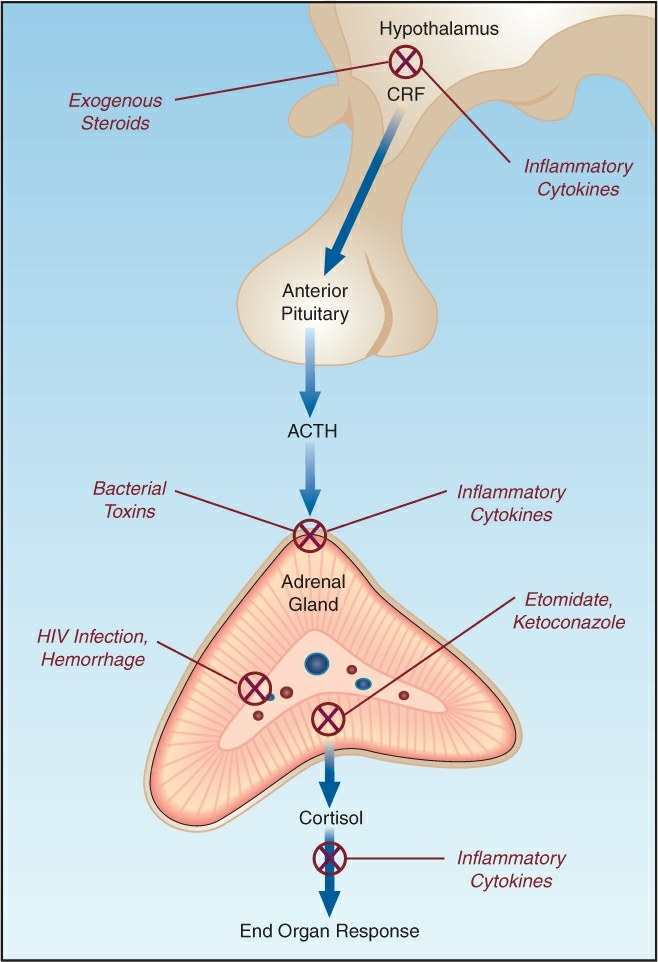

PA mmHgFCTemperaturaNa⁺ mEq/LLactato mmol/LNoradrenalinaCortisolACTHCortisol/díaReloj

Fig. 51.1 · Mecanismos de supresión suprarrenal (Marino 2024, p. 49). Esteroides exógenos y citocinas sobre el hipotálamo; toxinas, citocinas, VIH, hemorragia, etomidato y ketoconazol sobre la glándula.Las fuentes de este modelo
Lo que crecerá
Notas: lo que la fuente no dice, lo que discrepaPara profundizar: lo que el modelo no enseña